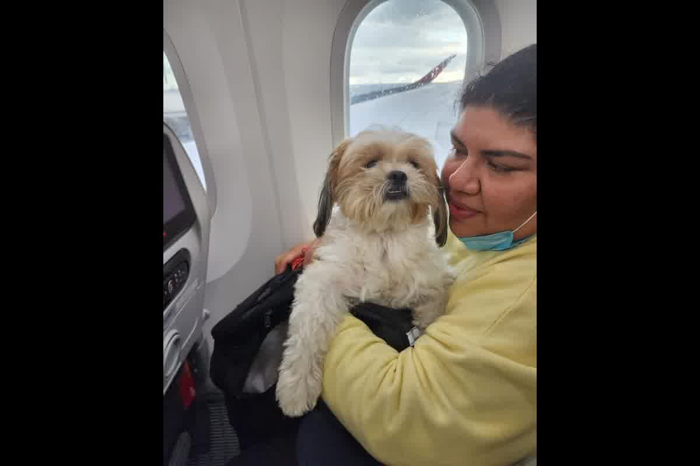
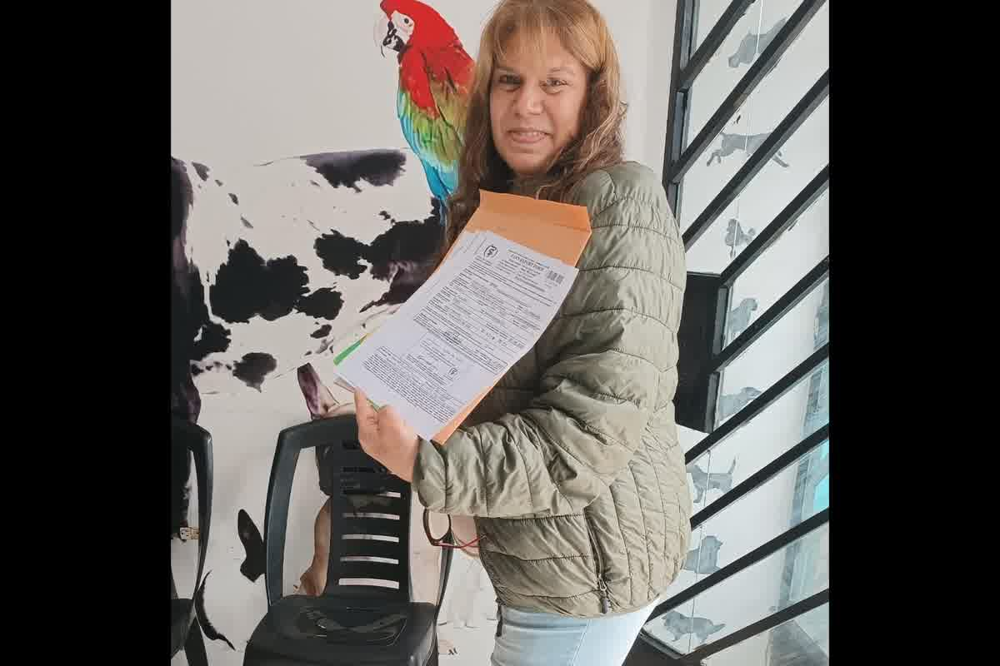

Planification technique du voyage international avec un animal de compagnie de Trujillo, Pérou : puce électronique, vaccin antirabique, RNATT, CZE et fenêtres de 21, 30 et 10 jours.

Cela dépend de la destination. Si elle exige seulement un vaccin antirabique valide (sans titrage), le minimum réaliste est de 4 à 6 semaines : puce ISO, vaccin, les 21 jours de validité exigés par l'UE, et le certificat sanitaire émis dans les 10 jours plus l'inspection SENASA. Si la destination exige un titrage sérologique (RNATT/FAVN ≥ 0,5 UI/mL), comptez des mois : le prélèvement se fait au moins 30 jours après le vaccin, et plusieurs destinations ajoutent 3 mois (UE, Royaume-Uni) ou 180 jours (Japon, Australie) à partir de la date de prélèvement. Règle pratique : commencez 5 à 6 mois à l'avance en cas de titrage.
Le passage ne définit presque jamais le calendrier. Elle est définie par la biologie et la norme du destin. Lors d'une consultation à Trujillo, nous constatons le même schéma : le vol a déjà été acheté et ce n'est qu'à ce moment-là que se pose la question des délais.
La réponse à la question de savoir combien de temps avant de commencer à voyager avec un animal de compagnie ne se résume pas à un seul chiffre. Cela dépend si la destination exige uniquement un vaccin à jour ou également un titrage sérologique et des délais d'attente ultérieurs.
Dans des scénarios simples, le point de départ est la micropuce ISO 11784/11785 implantée avant tout vaccin que vous souhaitez réclamer pour le voyage. Vient ensuite la primo-vaccination antirabique conforme aux exigences réglementaires internationales. Pour l'Union européenne, le règlement (UE) Reglamento (UE) 576/2013 fixe un délai de 21 jours à compter de la demande de primo-vaccination pour être valable pour le déplacement.
Si vous faites vacciner aujourd’hui et que la destination applique cette règle, le 22 est le premier jour éligible pour voyager. Cela n'inclut pas encore le certificat sanitaire cmvp de 10 jours ni l'inspection pour le certificat zoosanitaire sénasa. Ces fenêtres sont placées à la fin du planning et non au début.
Dans ces cas-là, le délai minimum effectif descend rarement en dessous de quatre à six semaines. Puce électronique, vaccin, attente de 21 jours, délivrance du certificat clinique dans les 10 jours précédant le départ et rendez-vous à SENASA. Essayer de compresser cet ordre produit une reprogrammation.

Si le pays demande un RNATT avec un seuil ≥ 0,5 UI/mL, le décompte change. L'échantillon à titrer doit être extrait au moins 30 jours après la primo-vaccination antirabique conforme aux exigences réglementaires internationales. Il ne suffit pas que 21 jours se soient écoulés.
Après l'extraction, l'heure du laboratoire agréé est ajoutée. Dans notre expérience clinique au Pérou, plusieurs semaines peuvent s'écouler entre l'envoi, le traitement et la délivrance du rapport en fonction du flux international. Certaines destinations ajoutent une période d'attente supplémentaire à compter de la date d'échantillonnage avant d'autoriser l'entrée.
Dans ces scénarios, répondre combien de temps avant de commencer à voyager avec un animal de compagnie implique de parler de mois. Entre puce électronique, vaccin, attente de 30 jours, résultat sérologique et éventuelles règles ultérieures, la marge raisonnable peut s'étendre jusqu'à quatre ou cinq mois.
Vacciner avant d'implanter une micropuce invalide ce vaccin pour la plupart des processus d'importation formels. Le système de réglementation doit associer un numéro d'identification unique à une loi de santé spécifique.
Lorsque la puce est placée ultérieurement, le vaccin précédent perd sa valeur documentaire. Vous êtes à nouveau vacciné, 21 ou 30 jours sont à nouveau comptés et, si RNATT s'applique, l'extraction est reprogrammée.
C'est pourquoi la planification doit être considérée comme un dossier et non comme une liste d'exigences vagues.
Le certificat sanitaire cmvp de 10 jours a une validité courte. Il est délivré dans les 10 jours précédant le départ et perd sa validité si le vol change au-delà de cette fenêtre.
Le certificat zoosanitaire Senasa est programmé alors que le dossier clinique est déjà clos. À Trujillo, au Pérou, le rendez-vous d'inspection exige que l'animal soit cliniquement apte et exempt d'ectoparasites visibles. Cet examen ne remplace aucune date limite antérieure ; vérifiez simplement que la séquence est complète.
L’achat du billet fixe d’abord une date rigide que la biologie ne négocie pas. La planification clinique, c'est accepter que certaines étapes ne peuvent pas être accélérées : le système immunitaire ne produit pas d'anticorps neutralisants en raison de la pression logistique et un laboratoire accrédité ne délivre pas de résultats en fonction de votre itinéraire. Lorsque l'ordre est inversé, le propriétaire tente d'adapter le médicament au ticket et non au cadre réglementaire.
À Trujillo, nous voyons fréquemment des propriétaires demander les délais réels après avoir payé le vol. Dans ces cas-là, la réponse n’est plus la planification, mais l’évaluation des dégâts. Parfois le calendrier permet des ajustements ; d'autres fois, cela oblige à décaler le départ car le délai légal ne correspond pas à la date choisie.
Définir la destination exacte et revoir sa logique réglementaire avant d’implanter la puce électronique. Un même pays peut avoir des conditions différentes selon l'origine ou la catégorie de risque sanitaire. Cette classification détermine si 21 jours suffisent ou si vous devez prévoir un diplôme.
Fixez une date de départ provisoire et reculez toutes les étapes à partir de là : 10 jours pour le certificat clinique, 21 ou 30 jours pour la validité ou l'échantillonnage, et des semaines supplémentaires pour le laboratoire. Ce n'est qu'ainsi que l'on pourra répondre à la question de savoir combien de temps avant de commencer un voyage avec un animal de compagnie avec des chiffres concrets et non avec des approximations optimistes.
Il prend également en compte les éventualités réelles : un vaccin différé en raison de la fièvre, un résultat sérologique inférieur à 0,5 UI/mL qui nécessite une revaccination et une répétition du processus, ou un changement de réglementation à destination. Depuis le 1er août 2024, par exemple, les États-Unis ont modifié leur système d'entrée des chiens conformément aux directives du CDC, ce qui a modifié les horaires prévus pour plusieurs propriétaires.
Un calcul effectué avec une mauvaise date peut transformer un trajet programmé en un dossier reparti de zéro. Zoovet Travel structure le calendrier clinique et documentaire en fonction du délai avant de commencer un voyage avec un animal de compagnie, en validant la puce électronique, le vaccin, le RNATT et les certificats de Trujillo, au Pérou. Écrivez-nous par WhatsApp ou planifiez une consultation pour revoir votre destination et vos dates réelles. Planifier avec un calendrier complet change le résultat.
Chaque voyage avec un animal est unique. Voici les doutes les plus courants — et pourquoi nous recommandons toujours de consulter votre cas particulier.
Non. Chaque pays fixe ses propres exigences : vaccins, tests de laboratoire, certifications officielles et délais d'attente qui, dans de nombreux cas, ne peuvent être raccourcis en aucune circonstance. Ce qui est valable pour une destination peut être insuffisant ou même incompatible avec une autre. Avant d'entamer toute démarche, évaluez votre cas avec nous.
Non. Les politiques varient selon la compagnie, la route, le type d'appareil et la saison, et changent fréquemment. Les races brachycéphales font face à des restrictions supplémentaires sur la plupart des compagnies internationales. Avant d'acheter votre billet, vérifiez la compatibilité exacte pour votre route et votre animal.
Cela dépend de la destination. Certains protocoles incluent des tests de laboratoire avec des délais d'attente obligatoires qui ne peuvent pas être raccourcis. Commencer trop tard peut invalider la documentation déjà obtenue ou obliger à reprogrammer entièrement le voyage. Écrivez-nous et nous calculerons ensemble votre calendrier réel.
L'animal peut être retenu dans les installations de l'aéroport, placé en quarantaine obligatoire aux frais du propriétaire, ou rapatrié. Dans les destinations avec des mesures de biosécurité strictes, les conséquences peuvent être encore plus graves. La vérification documentaire avant le voyage est le seul moyen d'éviter ce scénario. Contactez-nous avant de voyager.